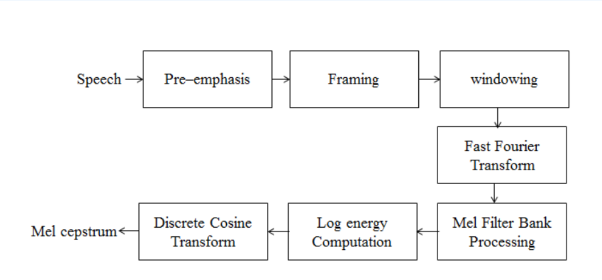
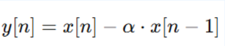
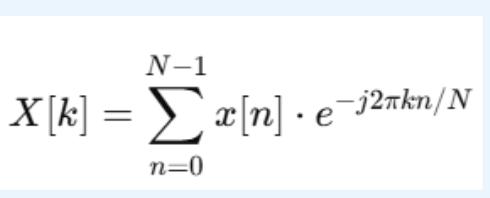

Abstract
This project explores the design and implementation of a voice-controlled robotic arm system intended to assist individuals with upper limb disabilities in spoon-feeding tasks. The system enables hands-free control of the robotic arm using simple spoken commands, which are processed and classified using deep learning techniques. Specifically, voice inputs such as “one”, “two”, and “three” are captured via a microphone, converted into Mel-Frequency Cepstral Coefficients (MFCCs), and passed through a Convolutional Neural Network (CNN) trained in PyTorch to identify the correct action. The recognized command is mapped to a corresponding feeding position, and the robot arm follows a smooth trajectory to perform the task. The motion planning involves defining waypoints for the spoon movement and applying cubic interpolation to generate a continuous path. Inverse kinematics are solved using Jacobian-based iterative methods to compute the required joint angles of the robotic arm. The solution ensures that the robot operates smoothly and precisely without exceeding its joint limits. The system is first tested in simulation using PyBullet, where the environment mimics the physical setup and validates the safety and accuracy of the trajectories. The final implementation uses the uFactory Lite 6 robotic arm, programmed via a TCP/IP interface in Python, to execute real-world tasks. The performance of the system demonstrates effective recognition of voice commands with minimal latency and accurate execution of feeding motions. This project combines machine learning, robotics, and assistive technology to create a cost-effective and practical solution for real-world rehabilitation and caregiving scenarios. The voice-controlled robotic arm not only enhances user independence but also showcases how AI and robotics can be integrated to solve everyday accessibility challenges.
Table of Contents
Introduction
This project aims to develop a voice-controlled robotic arm designed to assist individuals with upper limb disabilities in spoon-feeding tasks. By recognizing simple voice commands like "one", "two", or "three", the system identifies which bowl to pick food from. It uses a deep learning model for voice recognition, cubic interpolation for smooth motion planning, and inverse kinematics to calculate the arm’s joint angles. Initial testing is performed in a simulated environment using PyBullet, and real-world execution is carried out using the uFactory Lite 6 robotic arm. The goal is to provide an accessible, hands-free feeding solution to enhance user independence.
Literature Review & Related Work
Robot Arm Control System for Assisted Feeding of People With Disabilities in Their Upper Limbs(2022)
- This paper presents a robot-arm control system that helps people with upper-limb disabilities feed themselves by coupling a spoon to a 5-DOF manipulator and Raspberry Pi controller.It implements a PD-type electronic controller with gravity compensation, plus two safety measures—an emergency stop button and a proximity warning to prevent collisions.Validation over 35 trials each with rice and oatmeal showed an 80 % success rate for rice feeding and 98.9 % for oatmeal, demonstrating reliable assisted-feeding performance.
Design of Novel Feeding Robot for Korean Food (2010)
- This paper presents a novel feeding‐robotic system tailored for Korean cuisine—combining a food-grasping manipulator and a food-transferring manipulator—to enable persons with upper-limb disabilities to self-feed from general bowls of boiled rice and side dishes. Through prototype experiments, they demonstrated reliable handling of typical Korean foods and showed that the transferring arm module could be deployed to assist multiple users in care facilities or hospitals
A Meal-Assistance Robot System for Asian Food and Its Food Acquisition Point Estimation and User Interface Based on Face Recognition (2023)
- An MAR that uses Mask R-CNN to segment side-dishes on a tray and a face-recognition UI to select which dish to pick. 99 % success in food-area detection and 100 % success in UI-based dish selection, enabling reliable motion-planning targets for the robotic arm.
Objectives
- Develop a hands-free robotic arm system that assists individuals with upper limb disabilities in spoon-feeding tasks.
- Implement voice recognition using deep learning techniques to accurately classify spoken commands for controlling the robot.
- Design smooth and accurate motion trajectories using cubic interpolation for the spoon-feeding process.
- Apply inverse kinematics to calculate precise joint angles for the robotic arm to reach designated feeding positions.
- Create an affordable and accessible assistive technology solution that promotes independence and supports rehabilitation needs.
- Deploy the solution on real hardware using the uFactory Lite 6 robotic arm for practical demonstration and real-world application.
- Ensure low latency and high reliability in voice-command execution to enhance user experience.
Methodology
This project integrates voice recognition and robotic control for a feeding assistant robot using deep learning and trajectory planning. The methodology is organized into the following stages:
1. Voice Model Training:
The voice model training involves processing audio data and training a deep learning model to recognize different spoken commands.
2. Dataset:
- We used the Speech Commands Dataset v0.01 released by Google.
- This dataset contains thousands of one-second long audio clips of people speaking single words.
- For our project, we selected only three specific keywords: "one", "two", and "three".
3. Feature Extraction:
For each audio sample, 40 Mel-frequency cepstral coefficients (MFCCs) were extracted to capture essential features of the speech signal. To ensure consistency and compatibility with the convolutional neural network (CNN), the MFCC matrices were resized and padded to a uniform shape of 64×64.
4. MFCC Architecture:
5. Pre-Emphasis:
Pre-emphasis is a signal processing technique used in speech/audio analysis to amplify the high-frequency components.
6. Framing:
Framing is the process of dividing a continuous speech signal into small, overlapping chunks (called frames), so each chunk can be analyzed separately.
7. Windowing:
Once the signal is framed, each frame is multiplied by a window function (usually a Hamming window) to smooth the edges.
8. Fast Fourier Transform (FFT):
Transform each windowed frame to the frequency domain.
9. Mel Filter Bank Processing:
- This step transforms the frequency domain representation of the audio (from FFT) into the Mel scale, which is more aligned with human auditory perception.
- The Mel Filter Bank step applies triangular band-pass filters on the power spectrum output from FFT.
10. Log Energy Computation:
- Computes logarithm of energy in each Mel filter channel.
11. Discrete Cosine Transform (DCT):
- Transforms log-Mel energies into compact MFCC vectors.
12. Model Architecture:
- Three Conv2D layers with ReLU activation.
- This was followed by a GlobalAveragePooling layer, a Dense layer, a Dropout layer, and a final Dense output layer with softmax activation for three-class classification
13. Convolutional Layer:
- Detects features using sliding kernels over input.
Dense:
- The Dense layer connects every neuron in the previous layer to every neuron in the current layer, allowing the model to make a prediction based on all the features learned by the convolutional and pooling layers.
Dropout:
- The Dropout layer randomly drops a fraction of neurons during training to prevent overfitting by reducing reliance on specific neurons.
14. Softmax:
- Converts logits into class probabilities.
15. Motion Planning:
- Waypoints defined in Cartesian coordinates and Euler angles.
- Three feeding positions: “one”, “two”, and “three”.
- Includes neutral pose, approach, dip, and return phases.
16. Trajectory Generation:
- Uses cubic interpolation for position smoothing.
- Slerp used for smooth orientation transitions.
17. Inverse Kinematics (IK):
- Uses Jacobian-based IK with Forward Kinematics (FK).
- Computes error between current and target pose.
- Jacobian Transpose method iteratively updates joint angles.
- Damped Least Squares (DLS) adds regularization.
- Iterations stop when error is minimized or max count reached.
Results and Discussion
- The developed system was thoroughly evaluated in both simulated and physical environments. During PyBullet simulation, the robotic arm exhibited accurate responses to voice commands, following smooth and precise trajectories to the designated bowl positions.
- This affirmed the robustness of the voice recognition model and the effectiveness of the trajectory planning mechanism.
- In hardware implementation using the uFactory Lite 6 arm, the system reliably interpreted the spoken commands (“one,” “two,” and “three”) and executed corresponding feeding motions with high precision.
- Overall, the system proved to be both reliable and easy to use, showing strong potential for real-world assistive applications.
Hardware Implementation
Software Simulation
Conclusion and Future Work
- This project successfully integrates voice recognition with a robotic arm to perform spoon-feeding tasks.
- Using MFCC-based voice command classification, the system interprets user input to trigger predefined feeding motions.
- The robotic arm's trajectories were computed using Jacobian-based inverse kinematics in a PyBullet environment.
- Real-time simulation was validated with hardware implementation using the UFactory Lite 6 arm.
- The system demonstrates a promising assistive solution for individuals with motor impairments.
References
- Arnáez, D., Manco, F., Oliden, J., & Kemper, G. (2022). Robot Arm Control System for Assisted Feeding of People With Disabilities in Their Upper Limbs. https://www.researchgate.net/publication/364728019
- Song, W.-K., Kim, J., An, K.-O., & Lee, I.-H. (2010). Design of Novel Feeding Robot for Korean Food. https://www.google.com/search?q=Design+of+Novel+Feeding+Robot
- Choi, I., Ko, K., Song, H., & Jung, B.-J. (2023). A Meal-Assistance Robot System for Asian Food and Its Food Acquisition Point Estimation and User Interface Based on Face Recognition. https://www.researchgate.net/publication/369001925
- uFactory. (2023). uFactory Lite 6 Robotic Arm User Manual. https://www.ufactory.cc/products/lite6